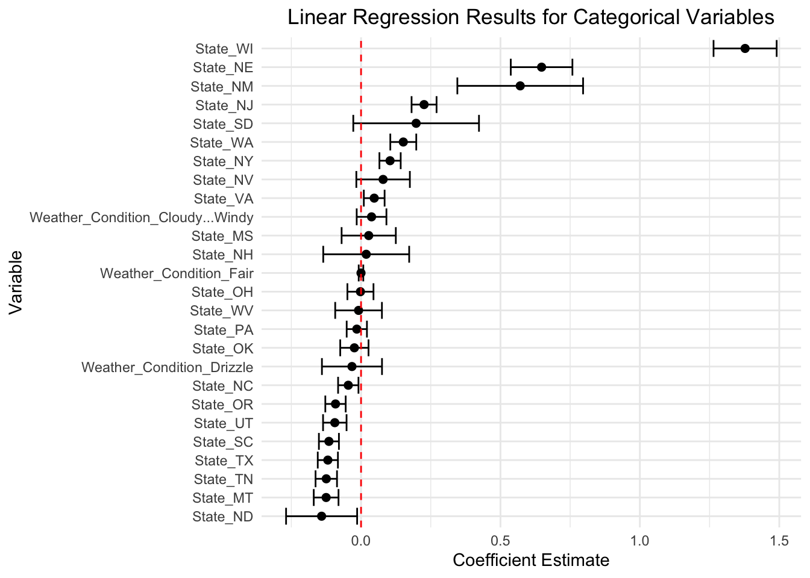

| Severity | Start_Time | End_Time | Start_Lat | Start_Lng | End_Lat | End_Lng | Distance(mi) | Description | Number | Street | Side | City | County | State | Zipcode | Country | Timezone | Airport_Code | Weather_Timestamp | Temperature(F) | Wind_Chill(F) | Humidity(%) | Pressure(in) | Visibility(mi) | Wind_Direction | Wind_Speed(mph) | Precipitation(in) | Weather_Condition | Amenity | Bump | Crossing | Give_Way | Junction | No_Exit | Railway | Roundabout | Station | Stop | Traffic_Calming | Traffic_Signal | Turning_Loop | Sunrise_Sunset | Civil_Twilight | Nautical_Twilight | Astronomical_Twilight |
|---|---|---|---|---|---|---|---|---|---|---|---|---|---|---|---|---|---|---|---|---|---|---|---|---|---|---|---|---|---|---|---|---|---|---|---|---|---|---|---|---|---|---|---|---|---|
| 4 | 2016-02-10 06:18:49 | 2016-02-10 12:18:49 | 40.72813 | -84.78965 | 40.74559 | -84.78962 | 1.206 | Closed between Willshire and US-33/Rockford Rd - Road closed due to accident. | 12998 | State Route 49 | R | Willshire | Van Wert | OH | 45898-9523 | US | US/Eastern | KFWA | 2016-02-10 05:54:00 | 17.1 | 0.6 | 77 | 29.91 | 2.5 | West | 19.6 | 0.01 | Light Snow | FALSE | FALSE | FALSE | FALSE | FALSE | FALSE | FALSE | FALSE | FALSE | FALSE | FALSE | FALSE | FALSE | Night | Night | Night | Day |
| 4 | 2016-02-15 20:46:40 | 2016-02-16 02:46:40 | 38.82493 | -85.47450 | 38.82415 | -85.63794 | 8.798 | Closed between US-421 and IN-3 - Road closed due to accident. | 4722 | W State Road 250 | R | Madison | Jefferson | IN | 47250 | US | US/Eastern | KLOU | 2016-02-15 20:53:00 | 37.0 | 34.5 | 96 | 29.85 | 1.5 | NNW | 3.5 | 0.00 | Overcast | FALSE | FALSE | FALSE | FALSE | FALSE | FALSE | FALSE | FALSE | FALSE | FALSE | FALSE | FALSE | FALSE | Night | Night | Night | Night |
| 4 | 2016-02-25 13:13:48 | 2016-02-25 19:13:48 | 39.96720 | -81.28700 | 39.96392 | -81.27197 | 0.828 | Closed between Inglenook Ln and Eldon Rd - Road closed due to accident. | 24288 | Leatherwood Rd | L | Quaker City | Guernsey | OH | 43773-9690 | US | US/Eastern | KZZV | 2016-02-25 13:12:00 | 37.0 | 28.5 | 79 | 29.66 | 5.0 | West | 13.8 | 0.00 | Light Snow | FALSE | FALSE | FALSE | FALSE | FALSE | FALSE | FALSE | FALSE | FALSE | FALSE | FALSE | FALSE | FALSE | Day | Day | Day | Day |
| 2 | 2016-05-09 13:07:53 | 2016-05-09 19:07:53 | 35.52718 | -121.04482 | 35.55134 | -121.07163 | 2.249 | At Ardath Dr - Accident. | 2 | Cabrillo Hwy | R | Cambria | San Luis Obispo | CA | 93428-6012 | US | US/Pacific | K87Q | 2016-05-09 12:56:00 | 71.0 | 71.0 | 53 | 29.75 | 10.0 | NW | 16.0 | 0.00 | Fair | FALSE | FALSE | FALSE | FALSE | FALSE | FALSE | FALSE | FALSE | FALSE | FALSE | FALSE | FALSE | FALSE | Day | Day | Day | Day |
| 2 | 2016-05-25 19:55:24 | 2016-05-26 01:55:24 | 34.34927 | -118.53723 | 34.34927 | -118.53723 | 0.000 | Between Calgrove Blvd/Exit 166 and CA-14/Exit 162 - Accident. | 23500 | The Old Rd | R | Newhall | Los Angeles | CA | 91321-3910 | US | US/Pacific | K3A6 | 2016-05-25 19:51:00 | 63.0 | 63.0 | 60 | 29.19 | 10.0 | VAR | 3.0 | 0.00 | Partly Cloudy | FALSE | FALSE | FALSE | FALSE | FALSE | FALSE | FALSE | FALSE | FALSE | FALSE | FALSE | FALSE | FALSE | Day | Day | Day | Day |
| 2 | 2016-05-26 20:05:53 | 2016-05-27 02:05:53 | 34.49062 | -118.61760 | 34.49062 | -118.61760 | 0.000 | Approaching at Castaic Rd - Accident. | 31472 | Castaic Rd | L | Castaic | Los Angeles | CA | 91384-3915 | US | US/Pacific | K3A6 | 2016-05-26 19:51:00 | 65.0 | 65.0 | 58 | 29.09 | 10.0 | SE | 8.0 | 0.00 | Fair | FALSE | FALSE | FALSE | FALSE | FALSE | FALSE | FALSE | FALSE | FALSE | TRUE | FALSE | FALSE | FALSE | Night | Day | Day | Day |
United States Car Accident Project
1 Indroduction
For our capstone project we will be analyzing a Kaggle data set on car accidents in the United States. The data set contains accident reports from February 2016 through December 2021 using various APIs. There are 2.8 million accidents reported in this data set. There are 47 different features making this data set quite large. We will be using a 10% subset of the data for ease of computing.
1.1 Research Questions
What features are strongly associated with the severity of a car accident?
Which model best predicts the severity of a car accident?
1.2 Overview of Modeling Techniques
Linear Regression: also known as Ordinary Least Squares (OLS) is the most simple method for regression analysis.
The linear regression model for predicting the severity of a car accident is:
\[\hat{y}=\hat{\beta_0} + \hat{\beta_i} \times x + \epsilon\]
where \(\hat{y}\) is the predicted severity of a car accident, \(\hat{\beta_0}\) is the intercept term, \(\hat{\beta_i}\) is the beta estimate for each feature, and \(\epsilon\) is the error term.
The model minimizes the mean squared error, which is written as:
\[MSE({\beta})=\frac{1}{n} \sum_{i=1}^n \hat{\epsilon_i}^2=\frac{1}{n}\sum_{i=1}^n (y_i-\hat{y_i})^2\]
where \(\hat{y_i}\) is the predicted severity of a car accident and \(y_i\) is the actual severity.
Ridge Regression: A regularized version of linear regression. This is achieved by adding this equation to the loss function:
\[\sum_{i=1}^n \beta_i^2\]
The cost function for ridge regression is as follows:
\[ (\beta) = MSE(\beta) + \frac{1}{n} \alpha \sum_{i=1}^n \beta_i^2 \]
where \(MSE(\beta)\) is the mean squared error function, \(\beta_i\) is the coefficient of the \(i\)-th feature, \(n\) is the number of samples, and \(\alpha\) is the regularization strength.
Lasso Regression: Like Ridge Regression, Lasso Regression adds a regularization term to the cost function, but uses the l1 norm of the weight vector instead of half the square of the l2 norm. The cost function for Lasso Regression is as follows:
\[J(\beta) = MSE(\beta) + \alpha \sum_{i=1}^n |\beta_i|\]
where \(MSE(\beta)\) is the mean squared error function, \(\beta_i\) is the coefficient of the \(i\)-th feature, \(n\) is the number of samples, and \(\alpha\) is the regularization strength.
Random Forest: They are comprised of many slightly different decision trees. The decision trees that make up the random forest are generated randomly giving it the name Random Forest. Depending on the number of trees in the forest, this could be a highly accurate model, but could also have the tendency to over fit the data. Random Forests are one way to combat the over fitting problem that Decision Tree Models may have.
2 Raw Data
2.1 About the Data
The target variable that we will be using is called “Severity” which indicates the severity of the accident scored on a numeric scale from 1-4. A score of 1 would indicate that the accident was not severe and had a little impact on traffic whereas a 4 would mean the accident had a large impact on traffic and was highly severe. We do not plan on utilizing all of the features provided in the data set. Instead we will only be using 11 in our models. The features include “State”, “Temperature(F)”, “Humidity(%)”, “Visibility(mi)”, “Wind_Speed(mph)”, “Weather_Condition”, “Precipitation(in)”, “Crossing”, “Junction”, “Traffic_Signal”, and “Sunrise_Sunset”. Using these variables in conjunction with supervised machine learning techniques, we will be able to predict the severity of a certain accident.
2.2 Data Description
State: Shows the state in address field.
Temperature(F): Shows the temperature (in Fahrenheit).
Humidity(%): Shows the humidity (in percentage).
Visibility(mi): Shows visibility (in miles).
Wind_Speed(mph): Shows wind speed (in miles per hour).
Weather_Condition: Shows the weather condition (rain, snow, thunderstorm, fog, etc.).
Precipitation(in): Shows precipitation amount in inches, if there is any.
Crossing: A POI annotation which indicates presence of crossing in a nearby location.
Junction: A POI annotation which indicates presence of junction in a nearby location.
Traffic_Signal: A POI annotation which indicates presence of traffic_signal in a nearby location
Sunrise_Sunset: Shows the period of day (i.e. day or night) based on sunrise/sunset.
2.3 Data Visualization
Most of the car accidents recorded had a severity score of 2 out of the highest posible 4. The data is not balanced.
The highest amount of car accidents in this particular data set came from Florida and California each with over 20,000 separate accidents.
This graph shows that weather condition does not have that much of an impact on severity level. Each of the severity levels showed very high proportions of fair weather.
3 Preparing Data For Machine Learning
accident_12var <- accident_raw %>%
select(Severity,State, `Temperature(F)`, `Humidity(%)`,
`Visibility(mi)`, `Wind_Speed(mph)`, Weather_Condition,
`Precipitation(in)`, Crossing, Junction, Traffic_Signal,
Sunrise_Sunset)
colnames(accident_12var) <- gsub("\\)|\\%|\\(", ".", colnames(accident_12var))library(caret)
library(recipes)
library(dplyr)
# Split the data into training and testing sets
set.seed(2)
train_indices <- createDataPartition(accident_12var$Severity, p = 0.8, list = FALSE)
train_set <- accident_12var[train_indices, ]
test_set <- accident_12var[-train_indices, ]
# TRAIN SET
# Make a copy of the train set
copied_traindata <- data.frame(train_set)
# Add an id column to copied_traindata
copied_traindata <- copied_traindata %>% mutate(id = row_number())
# Separate Label from Feature
accident <- select(copied_traindata, -Severity) # drop Severity column
label <- copied_traindata$Severity # select Severity column
# Separate Numerical from Categorical
accident_num <- accident %>%
select(id, Temperature.F., Humidity..., Visibility.mi., Wind_Speed.mph., Precipitation.in.)
accident_cat <- accident %>%
select(id, State, Weather_Condition, Crossing, Junction, Traffic_Signal, Sunrise_Sunset)
# Define numeric and categorical attributes
num_attribs <- names(accident_num)[2:6]
cat_attribs <- names(accident_cat)[2:7]
# Define preprocessing pipelines
num_pipeline <- recipe(~., data = accident_num) %>%
step_impute_median(all_numeric(), -has_role("id")) %>%
step_center(all_numeric(), -has_role("id")) %>%
step_scale(all_numeric(), -has_role("id"))
cat_pipeline <- recipe(~., data = accident_cat) %>%
step_dummy(all_nominal())
# Merge the preprocessed numerical and categorical features into a single dataset
accident <- accident %>% rename(Index = id)
df1 <- mutate(num_pipeline %>% prep() %>% bake(new_data = NULL), join_key = "Index")
df2 <- mutate(cat_pipeline %>% prep() %>% bake(new_data = NULL), join_key = "Index")
accident_prepared <- accident %>%
select(-one_of(c(cat_attribs, num_attribs)))
accident_prepared <- cbind(accident_prepared, df1,df2)
accident_prepared <- accident_prepared %>%
distinct()
accident_prepared <- select(accident_prepared, -c("Index", "id", "join_key", "id.1", "join_key.1"))
#TEST SET
# Make a copy of the test set
copied_testdata <- data.frame(test_set)
# Add an id column to copied_testdata
copied_testdata <- copied_testdata %>% mutate(id = row_number())
# Separate Label from Feature
accident_test <- select(copied_testdata, -Severity) # drop Severity column
label_test <- copied_testdata$Severity # select Severity column
# Separate Numerical from Categorical
accident_num_test <- copied_testdata %>%
select(Temperature.F., Humidity..., Visibility.mi., Wind_Speed.mph., Precipitation.in.)
accident_cat_test <- copied_testdata %>%
select(State, Weather_Condition, Crossing, Junction, Traffic_Signal, Sunrise_Sunset)
# Define numeric and categorical attributes
num_attribs <- names(accident_num_test)[1:6]
cat_attribs <- names(accident_cat_test)[1:7]
# Define preprocessing pipelines
num_pipeline <- recipe(~., data = accident_num_test) %>%
step_impute_median(all_numeric(), -has_role("id")) %>%
step_center(all_numeric(), -has_role("id")) %>%
step_scale(all_numeric(), -has_role("id"))
cat_pipeline <- recipe(~., data = accident_cat_test) %>%
step_dummy(all_nominal())
# Merge the preprocessed numerical and categorical features into a single dataset
copied_testdata <- copied_testdata %>% rename(Index = id)
df1 <- mutate(num_pipeline %>% prep() %>% bake(new_data = NULL), join_key = "Index")
df2 <- mutate(cat_pipeline %>% prep() %>% bake(new_data = NULL), join_key = "Index")
accident_prepared_test <- accident_test %>%
select(-one_of(c(cat_attribs, num_attribs)))
accident_prepared_test <- cbind(accident_prepared_test, df1,df2)
accident_prepared_test <- accident_prepared_test %>%
distinct()
accident_prepared_test <- select(accident_prepared_test, -c("id", "join_key", "join_key.1"))4 Models
4.1 Linear Regression
lin_reg <- lm(label ~ ., data = accident_prepared)4.2 Ridge Regression
library(glmnet)
y <- label
X <- as.matrix(select(accident_prepared, -label))
lambda_seq <- 10^seq(10, -2, length = 100)
ridge_fit <- cv.glmnet(X, y, alpha = 0, lambda = lambda_seq)
plot(ridge_fit)ridge_coef <- coef(ridge_fit)[-1]4.3 Lasso Regression
x <- model.matrix(~ ., data = accident_prepared)
y <- label
# Fit a Lasso regression with cross-validation
lasso_model <- cv.glmnet(x, y, alpha = 1)
extra_columns <- setdiff(colnames(accident_prepared_test), colnames(accident_prepared))
accident_prepared_test <- accident_prepared_test %>%
select(-one_of(extra_columns))4.4 Random Forest
library(randomForest)
accident_forest <- randomForest(label ~ ., data = accident_prepared, ntree = 10, mtry = 5)5 Results
5.1 Mean Squared Error of all Models
Linear Regression Mean Squared Error: 0.1256516Ridge Regression Mean Squared Error: 0.1307262Lasso Regression Mean Squared Error: 0.1281963Random Forest Mean Squared Error: 0.1251018All of the models had very similar mean squared errors of around 0.13, but the best two models for predicting the severity of a car accident is the linear regression and random forest. The had slightly lower mean squared errors compared to the ridge and lasso regression models.
5.2 Linear Regression Results
##
## Linear Regression Results
## =====================================================================
## Severity of Car Accident
## ---------------------------
## label
## ---------------------------------------------------------------------
## Temperature.F. 0.003 (-0.0001, 0.006)
## Humidity... 0.007*** (0.004, 0.010)
## Visibility.mi. 0.0002 (-0.003, 0.003)
## Wind_Speed.mph. -0.003* (-0.006, -0.0003)
## Precipitation.in. -0.001 (-0.003, 0.002)
## Crossing -0.031*** (-0.038, -0.024)
## Junction 0.023 (-0.010, 0.056)
## Traffic_Signal -0.017*** (-0.023, -0.010)
## State_AR 0.209*** (0.161, 0.257)
## State_AZ -0.204*** (-0.237, -0.171)
## State_CA -0.128*** (-0.157, -0.098)
## State_CO 0.507*** (0.461, 0.553)
## State_CT 0.459*** (0.410, 0.507)
## State_DC 0.042 (-0.005, 0.088)
## State_DE 0.287*** (0.228, 0.346)
## State_FL -0.122*** (-0.152, -0.093)
## State_GA 0.563*** (0.511, 0.614)
## State_IA 0.407*** (0.343, 0.470)
## State_ID -0.011 (-0.057, 0.035)
## State_IL 0.287*** (0.252, 0.323)
## State_IN 0.606*** (0.553, 0.658)
## State_KS 0.374*** (0.258, 0.489)
## State_KY 0.012 (-0.057, 0.082)
## State_LA -0.143*** (-0.175, -0.111)
## State_MA 0.523*** (0.425, 0.621)
## State_MD 0.102*** (0.068, 0.137)
## State_ME 0.072 (-0.088, 0.233)
## State_MI 0.056*** (0.021, 0.091)
## State_MN -0.124*** (-0.156, -0.092)
## State_MO -0.061** (-0.104, -0.018)
## State_MS 0.028 (-0.054, 0.109)
## State_MT -0.125*** (-0.162, -0.088)
## State_NC -0.046** (-0.076, -0.015)
## State_ND -0.141** (-0.248, -0.035)
## State_NE 0.648*** (0.555, 0.740)
## State_NH 0.019 (-0.111, 0.148)
## State_NJ 0.226*** (0.188, 0.264)
## State_NM 0.571*** (0.382, 0.760)
## State_NV 0.079 (-0.001, 0.160)
## State_NY 0.104*** (0.072, 0.136)
## State_OH -0.002 (-0.041, 0.037)
## State_OK -0.024 (-0.066, 0.019)
## State_OR -0.092*** (-0.122, -0.061)
## State_PA -0.015 (-0.046, 0.015)
## State_SC -0.115*** (-0.145, -0.085)
## State_SD 0.198* (0.008, 0.387)
## State_TN -0.125*** (-0.157, -0.092)
## State_TX -0.119*** (-0.149, -0.089)
## State_UT -0.094*** (-0.129, -0.059)
## State_VA 0.047** (0.016, 0.079)
## State_WA 0.152*** (0.112, 0.191)
## State_WI 1.377*** (1.282, 1.472)
## State_WV -0.009 (-0.079, 0.061)
## Weather_Condition_Cloudy...Windy 0.038 (-0.007, 0.082)
## Weather_Condition_Drizzle -0.033 (-0.123, 0.058)
## Weather_Condition_Fair -0.0001 (-0.007, 0.007)
## Weather_Condition_Fair...Windy 0.024 (-0.004, 0.052)
## Weather_Condition_Fog -0.007 (-0.027, 0.014)
## Weather_Condition_Haze 0.011 (-0.010, 0.032)
## Weather_Condition_Haze...Windy 0.050 (-0.090, 0.190)
## Weather_Condition_Heavy.Rain 0.010 (-0.035, 0.054)
## Weather_Condition_Heavy.Snow 0.014 (-0.093, 0.121)
## Weather_Condition_Heavy.T.Storm 0.049 (-0.008, 0.106)
## Weather_Condition_Light.Drizzle 0.027 (-0.028, 0.082)
## Weather_Condition_Light.Rain 0.018** (0.005, 0.030)
## Weather_Condition_Light.Rain...Windy 0.069* (0.004, 0.134)
## Weather_Condition_Light.Rain.with.Thunder 0.006 (-0.037, 0.050)
## Weather_Condition_Light.Snow 0.051*** (0.029, 0.074)
## Weather_Condition_Light.Snow...Windy -0.016 (-0.110, 0.078)
## Weather_Condition_Mostly.Cloudy -0.013** (-0.021, -0.004)
## Weather_Condition_Mostly.Cloudy...Windy 0.032 (-0.011, 0.075)
## Weather_Condition_N.A.Precipitation -0.081 (-0.195, 0.034)
## Weather_Condition_Overcast 0.665*** (0.603, 0.727)
## Weather_Condition_Partly.Cloudy -0.0005 (-0.010, 0.009)
## Weather_Condition_Partly.Cloudy...Windy 0.071* (0.011, 0.131)
## Weather_Condition_Patches.of.Fog -0.060 (-0.189, 0.069)
## Weather_Condition_Rain -0.011 (-0.039, 0.016)
## Weather_Condition_Rain...Windy -0.108 (-0.219, 0.003)
## Weather_Condition_Smoke 0.045* (0.005, 0.084)
## Weather_Condition_Snow 0.078** (0.014, 0.143)
## Weather_Condition_T.Storm 0.030 (-0.010, 0.071)
## Weather_Condition_Thunder 0.012 (-0.026, 0.050)
## Weather_Condition_Thunder.in.the.Vicinity -0.005 (-0.042, 0.032)
## Weather_Condition_Wintry.Mix -0.006 (-0.072, 0.060)
## Sunrise_Sunset_Night 0.010*** (0.005, 0.015)
## Constant 2.139*** (2.109, 2.168)
## =====================================================================
## =====================================================================
## Note: *p<0.1; **p<0.05; ***p<0.01

5.3 Random Forest Results
6 Discussion
6.1 Linear Regression
When looking at the beta estimates provided by our Linear Regression model, there were 41 variables that returned a p-value of less than 0.01. This indicates that these variables were statistically significant. These include:
Humidity
Crossing
Traffic Signal
Several States
Light Drizzle/Windy
Light Freezing rain/windy
Ice Pellets
Overcast Conditions
Smoky, Windy Conditions
Sunrise/Sunset/Night
6.1.1 Interpretations of Statistically significant variables:
Humidity had a beta estimate of 0.007, which means that as humidity percentage increases by one percentage point, severity increases by 0.007.
If there is a crosswalk nearby, the severity of an accident decreases by 0.036 percent
If there is a traffic signal nearby, the severity of the accident decreases by 0.014
The highest beta estimate magnitude had to do with the state in which an accident occurred. The state with the highest impact on accident severity is Wisconsin. The severity of an accident increases by 1.43 if the accident occurred in Wisconsin. Arizona has a beta estimate of -0.199, the lowest of the states surveyed. This means that if an accident were to occur in Arizona, the severity decreases by 0.199.
If there is a light drizzle of rain, mixed with windy conditions, the severity of accidents is expected to increase by 0.659
If there is light freezing rain mixed with windy conditions, the severity of an accident is expected to increase by 0.871.
6.2 Random Forest
Looking at the variance importance plot, we can see that being in a particular state had the most importance in predicting the severity of the accident. Of all the variables 21 out of the top 30 most important variable all involved what state you are in. Some of the other important variables that are not related are temperature, humidity, wind speed, traffic light presence, visibility, and precipitation.
6.3 Potential Policy Recommendations
There are a couple of potential reasons why Wisconsin suffers the most severe car accidents. One of these reasons is that Wisconsin is subject to extreme weather (lots of rain and snow) that can cause dangerous road conditions, thus contributing to fatal car accidents. When looking at a study by Mingo & Yankala, it is shown that five of the nine deadliest road segments in the state of Wisconsin are located in Milwaukee, which is Wisconsin’s most densely populated area. The way that these roads are constructed potentially contributes to the number of severe car accidents that occur. Each of these segments intersects with another main road or highway or has an interchange with an interstate. One potential way to combat the prominence of severe car accidents on these segments is to decrease the speed limit on these stretches of roads, especially where they intersect/interchange with other main roads. Wisconsin is also the 10th worst state when it comes to arrests/fatalities for driving under the influence. Wisconsin should look to hand out more severe punishment for DUI charges in order to attempt to prevent this risky behavior. https://www.mysclaw.com/the-deadliest-road-stretches-in-wisconsin/#:~:text=Heavily%20trafficked%20roads%20such%20as,higher%20incident%20rate%20of%20accidents
Although New Hampshire does not have areas as densely populated as a metropolitan area such as Milwaukee, there are glaring reasons why accidents tend to be more severe. According to Tenn and Tenn, Attorneys at law, New Hampshire struggles to maintain the conditions of their roads. While other state governments may handle poor road conditions quickly and properly, unfortunately, New Hampshire does not. Many of the roads in New Hampshire are cracked/broken, and feature overgrown plant life. There are poor road designs in New Hampshire and many potholes. One large issue with many New Hampshire roads is that they feature curves that are not marked by road signs. One policy suggestion that we have for New Hampshire to combat its severe car accident problem is to mark winding, curved roads with road signs. New Hampshire’s state and local governments must also make more of an effort to fix roads that are damaged by weather, and car accidents at a much faster pace, rather than leaving these hazardous conditions to cause even more accidents. https://www.tennandtenn.com/car-accidents/dangerous-road-conditions/
While investigating why many of the states with the highest likelihood for an accident to be severe, the overwhelming majority of these states cite speeding, distracted driving (cell phones), weather, drowsiness, and drunk driving as the main reasons for the severity of their accidents. While there is no reasonable way to completely eliminate these severe accidents through policy, state and local governments can make more of an effort to promote the laws that are already in place. For example, state and local governments can issue higher, more severe penalties for driving under the influence, and being caught on your phone while driving. Also, state and local governments can again make more of an effort to keep their roads in the best condition possible by removing debris, filling potholes, and making sure that adequate street signs are in place to point out potentially hazardous road conditions.
7 Conclusion
Linear regression and random forest models are the best models to predict the severity of a car accident out of the four models tested. Some of the most highest impact variables are the state the accident occurs in, temperature, humidity, and wind speed. These models yielded some surprising results. I assumed that different weather conditions would play a much larger role in the severity of the accident, specifically snowy/mixed precipitation conditions. In future research, I would like to make sure the data is balanced before we start training the models. In the graph of the frequency of each severity accident, the data had a very lopsided numbers of each severity level. This may have had a large impact on the models.